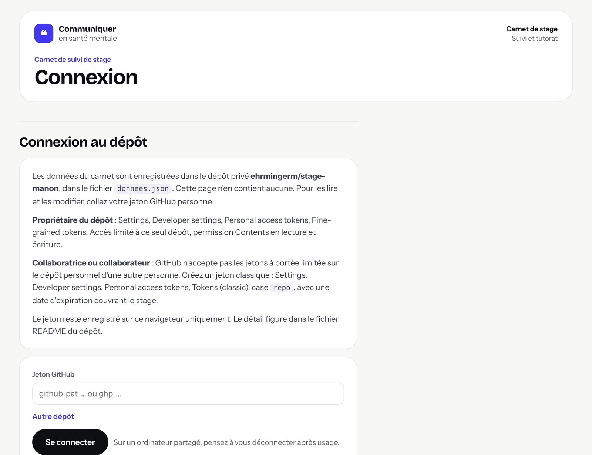
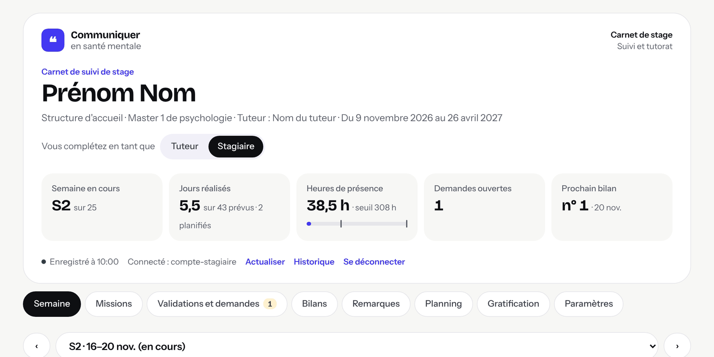
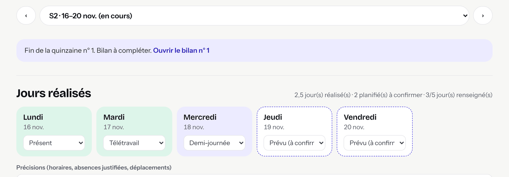
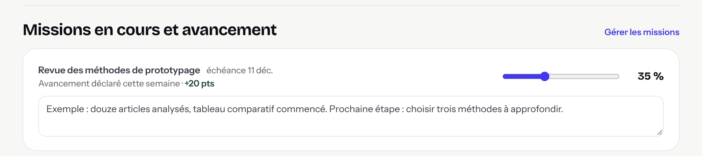
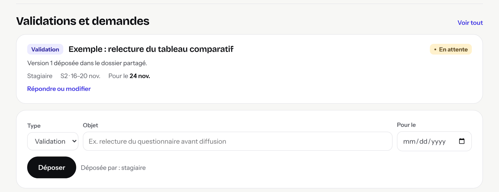
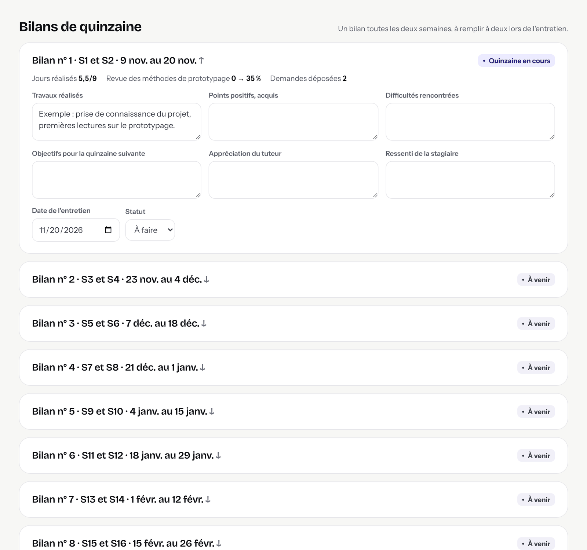
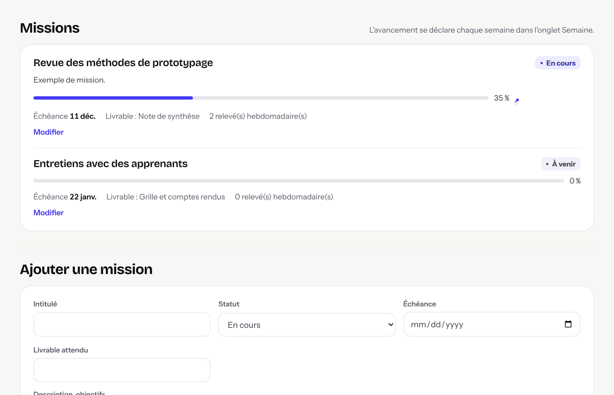
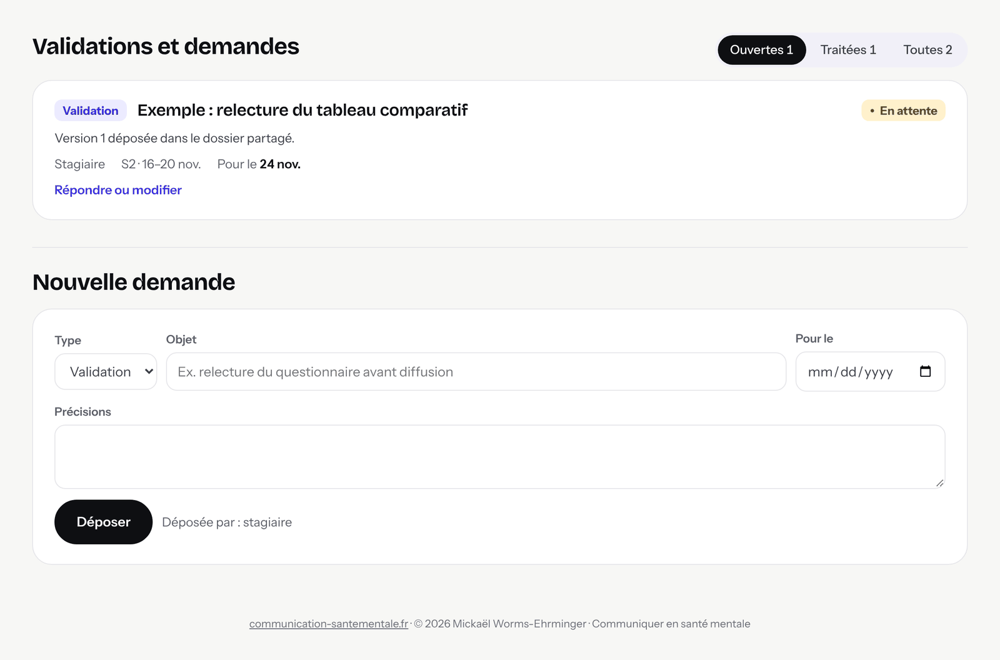
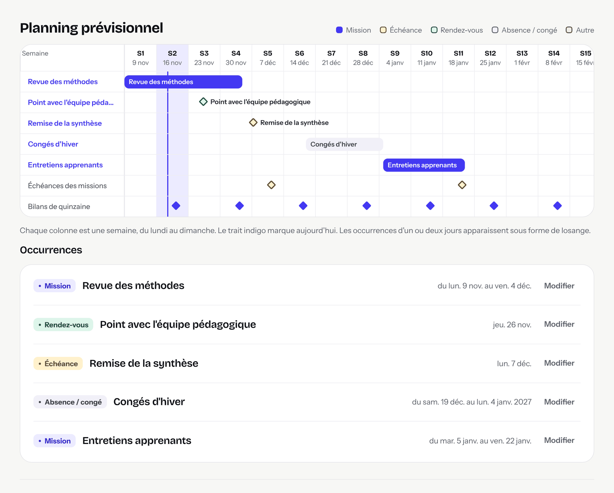
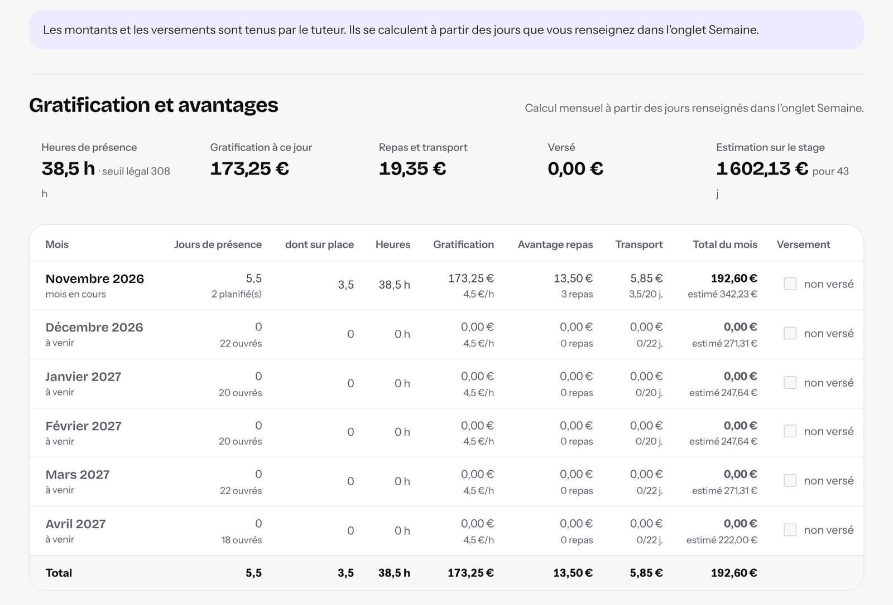

Ce livret explique comment utiliser le carnet de suivi de votre stage. Vous y trouverez comment vous connecter, renseigner votre semaine, déposer une demande et préparer un bilan.
Ajoutez-la à vos favoris. C'est la seule adresse à utiliser.
Le carnet est un espace commun pour suivre votre stage semaine par semaine. Votre tuteur et vous voyez les mêmes informations.
Les données sont enregistrées dans un dépôt GitHub privé, accessible à vous deux seulement. La page du carnet n'en contient aucune : elle les affiche une fois que vous êtes connectée. Chaque enregistrement est daté et conservé dans un historique.
| Vous | Votre tuteur |
|---|---|
| Renseigner vos jours de présence | Répondre à vos demandes |
| Indiquer l'avancement de vos missions | Donner son appréciation dans les bilans |
| Déposer vos demandes de validation | Tenir les paramètres du stage |
| Préparer les bilans et donner votre ressenti | Tenir la gratification et les versements |
Vous pouvez tous les deux ajouter des remarques et des étapes au planning.
| Onglet | À quoi il sert |
|---|---|
| Semaine | Vos jours, l'avancement des missions, vos demandes et vos remarques de la semaine. C'est l'onglet principal. |
| Missions | La liste des missions, leur statut, leur échéance et leur progression. |
| Validations et demandes | Toutes les demandes, avec leur statut et la réponse du tuteur. |
| Bilans | Un bilan toutes les deux semaines, rempli lors de l'entretien. |
| Remarques | Les remarques générales sur le stage, datées et classées. |
| Planning | Le calendrier prévisionnel, semaine par semaine. |
| Gratification | Le calcul mensuel de la gratification, du repas et du transport. Lecture seule. |
| Paramètres | Les dates du stage et les objectifs de la convention. Lecture seule. |
Ces étapes ne se font qu'une fois. Il vous faut un compte GitHub et un ordinateur.
Ouvrez le courriel d'invitation de GitHub et cliquez sur « Accept invitation ». Vous pouvez aussi vous connecter à GitHub et ouvrir l'adresse github.com/ehrmingerm/stage-soumeya/invitations.
Le jeton est une clé personnelle qui permet au carnet de lire et d'enregistrer les données. Sur GitHub :
ghp_.GitHub n'affiche le jeton qu'une fois. Si GitHub demande votre mot de passe ou un code, saisissez-le.
Ouvrez l'adresse https://ehrmingerm.github.io/carnet_stage-soumeya/ et ajoutez-la à vos favoris.
Collez votre jeton dans le champ « Jeton GitHub », puis cliquez sur « Se connecter ». Le navigateur garde le jeton en mémoire : vous n'aurez pas à le recoller à chaque visite.
Sous les chiffres du haut, la mention « Connecté : » est suivie de votre identifiant GitHub. À côté de « Vous complétez en tant que », Stagiaire est sélectionné. Si ce n'est pas le cas, cliquez dessus.


Un jeton classique donne accès à tous vos dépôts GitHub, pas seulement à celui du stage. Ne le collez que dans le carnet. Ne l'envoyez à personne, y compris à votre tuteur.
S'il est perdu ou expiré, créez-en un nouveau et supprimez l'ancien depuis la même page de GitHub.
Tout se passe dans l'onglet Semaine. La semaine en cours s'ouvre par défaut. Les flèches et la liste en haut permettent d'en choisir une autre.
Chaque jour travaillé de la semaine a sa carte. Choisissez son état dans la liste.
| État | Quand l'utiliser |
|---|---|
| Prévu (à confirmer) | Dès qu'une date de présence est convenue avec votre tuteur. |
| Présent | Une journée effectuée sur place. |
| Télétravail | Une journée effectuée à distance. |
| Demi-journée | Une demi-journée sur place. Elle compte pour moitié. |
| Absent | Un jour prévu qui n'a pas eu lieu. |
| Congé / fermeture | Un jour sans stage, convenu à l'avance. |
| Férié | Indiqué automatiquement. Vous n'avez rien à faire. |
Le principe : un jour est d'abord Prévu, puis, une fois effectué, il devient Présent, Télétravail ou Demi-journée. Un jour resté « Prévu » ne compte pas comme jour réalisé.
La différence entre « Présent » et « Télétravail » a une conséquence : l'avantage repas et la prise en charge du transport ne concernent que les jours sur place.
Le champ « Précisions » sert à noter un horaire particulier, une absence justifiée ou un déplacement.

Chaque mission en cours a un curseur, de 0 à 100 %. Déplacez-le pour indiquer où vous en êtes cette semaine. Dans le champ en dessous, notez en quelques lignes ce que vous avez fait, la prochaine étape et les difficultés éventuelles.
Si aucune mission n'apparaît, aucune n'est encore « En cours ». Voyez avec votre tuteur, puis consultez l'onglet Missions.

Déposez une demande dès que vous avez besoin de votre tuteur. Il y en a trois types :
Saisissez un objet court, une date si la réponse est attendue avant un moment précis, puis cliquez sur « Déposer ». La demande apparaît avec le statut En attente. Votre tuteur y répond et la passe en Validé, À revoir ou Traité. Sa réponse s'affiche sous la demande.
Une demande encore en attente reste visible les semaines suivantes, sous « En attente depuis les semaines précédentes ».

Ce champ libre, en bas de l'onglet, sert à noter ce qui s'est bien passé, un point d'attention ou une information utile.
Le plus simple est de renseigner vos jours au fur et à mesure, puis de compléter l'avancement et les remarques en fin de semaine. Votre tuteur voit ainsi où vous en êtes avant chaque point.
Le stage est découpé en quinzaines. À la fin de chacune, un message dans l'onglet Semaine vous invite à ouvrir le bilan. Vous pouvez aussi passer par l'onglet Bilans, où le bilan en cours est déjà ouvert.
En haut du bilan, le carnet reprend les chiffres de la quinzaine : jours réalisés, évolution de chaque mission, nombre de demandes déposées. Le bilan comporte ensuite six champs.
| Champ | Qui le remplit |
|---|---|
| Travaux réalisés | Vous, avant l'entretien |
| Points positifs, acquis | Vous, puis ensemble |
| Difficultés rencontrées | Vous, puis ensemble |
| Objectifs pour la quinzaine suivante | Ensemble, pendant l'entretien |
| Appréciation du tuteur | Votre tuteur |
| Ressenti de la stagiaire | Vous |
Préparez les trois premiers champs avant l'entretien. Après l'entretien, le statut passe à « Réalisé ».

Chaque mission a un intitulé, un statut, une échéance, un livrable attendu et une barre de progression. La progression reprend ce que vous indiquez chaque semaine. Une mission s'ajoute ou se modifie en accord avec votre tuteur, avec « Ajouter une mission » ou le lien « Modifier ».

Cet onglet rassemble toutes les demandes. Les boutons en haut filtrent les demandes ouvertes, traitées ou toutes. Le formulaire du bas permet d'ajouter des précisions plus longues que dans l'onglet Semaine.

Ce sont des remarques générales sur le stage, sans lien avec une semaine précise. Chacune a une date et une catégorie : générale, compétences, posture professionnelle, organisation, évaluation finale.
Le planning montre le stage semaine par semaine, et chaque occurrence s'y place à sa date exacte. Les occurrences d'un ou deux jours, comme un rendez-vous ou une échéance, apparaissent sous forme de losange. Le trait indigo marque aujourd'hui.
Pour ajouter une étape, une échéance, un rendez-vous ou un congé, remplissez « Ajouter au planning » en bas de l'onglet : un libellé, un type, une date de début et, si besoin, une date de fin. Sous le planning, la liste des occurrences rappelle les dates de chacune. Cliquez sur « Modifier » ou sur une ligne du planning pour la changer.

Cet onglet est en lecture seule. Il calcule chaque mois trois montants distincts, à partir des jours confirmés :
Les jours seulement « Prévus » n'entrent pas dans les montants dus. Ils servent à l'estimation. Votre tuteur coche « versé » une fois le paiement effectué.

Cet onglet, en lecture seule, rappelle les dates du stage, le nombre de jours prévu par la convention et les objectifs pédagogiques.
Chaque saisie est enregistrée environ une seconde après votre dernière modification. Il n'y a pas de bouton « Enregistrer ». L'état s'affiche sous les chiffres du haut :
Si vous fermez la page pendant un enregistrement, le navigateur vous demande de confirmer. Attendez quelques secondes, puis fermez.
Le carnet relit les données toutes les minutes et chaque fois que vous revenez sur l'onglet du navigateur. Le lien « Actualiser » le fait immédiatement.
Si vous saisissez tous les deux en même temps, les modifications sont fusionnées élément par élément : une semaine, une mission, une demande. Si vous modifiez tous les deux le même élément au même moment, la dernière modification enregistrée l'emporte. Pour un bilan, mieux vaut donc le remplir l'un après l'autre.
Le lien « Historique » ouvre sur GitHub la liste de tous les enregistrements, avec leur auteur et leur date. Une saisie effacée par erreur peut y être retrouvée : prévenez votre tuteur.
index.html téléchargé : il ne serait pas mis à jour.| Message ou situation | Que faire |
|---|---|
| « Ce jeton est refusé par GitHub » | Le jeton est incomplet ou expiré. Recollez-le en entier, ou créez-en un nouveau. |
| « Le dépôt … est introuvable avec ce jeton » | Vérifiez que vous avez accepté l'invitation et que la case repo était cochée à la création du jeton. |
| « Votre compte peut lire le dépôt mais pas y écrire » | Prévenez votre tuteur : il doit vérifier vos droits sur le dépôt. |
| « Votre jeton GitHub n'est plus valide » | Le jeton a expiré ou a été supprimé. Cliquez sur « Se déconnecter », créez un nouveau jeton et collez-le. |
| « Votre jeton ne permet pas d'écrire dans le dépôt » | Créez un jeton classique avec la case repo cochée. |
| « Les dernières modifications n'ont pas pu être enregistrées » | La connexion a été interrompue. Restez sur la page : vos saisies seront renvoyées à la prochaine modification. Vérifiez ensuite que « Enregistré » s'affiche. |
| « Connexion à GitHub impossible » | Vérifiez votre connexion internet, puis rechargez la page. |
| La page semble ancienne ou ne change pas | Rechargez en forçant : Cmd + Maj + R sur Mac, Ctrl + Maj + R sur PC. Vérifiez que vous êtes bien sur l'adresse en favori. |
| Le bouton « Generate token » ne réagit pas | Choisissez une date d'expiration, regardez si GitHub demande une confirmation, puis rechargez la page de GitHub. |
Pour tout autre problème, envoyez à votre tuteur le texte exact du message affiché.
À propos des captures. Les illustrations de ce livret ont été réalisées avec des données d'exemple. Les noms, missions et montants affichés ne sont pas ceux de votre stage.